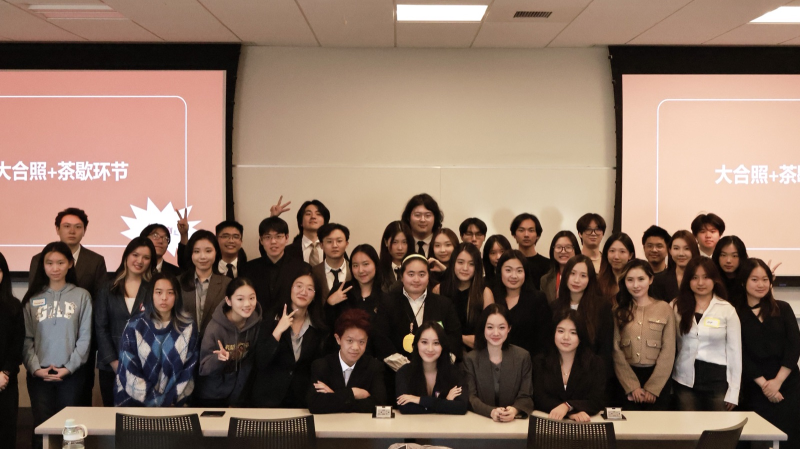
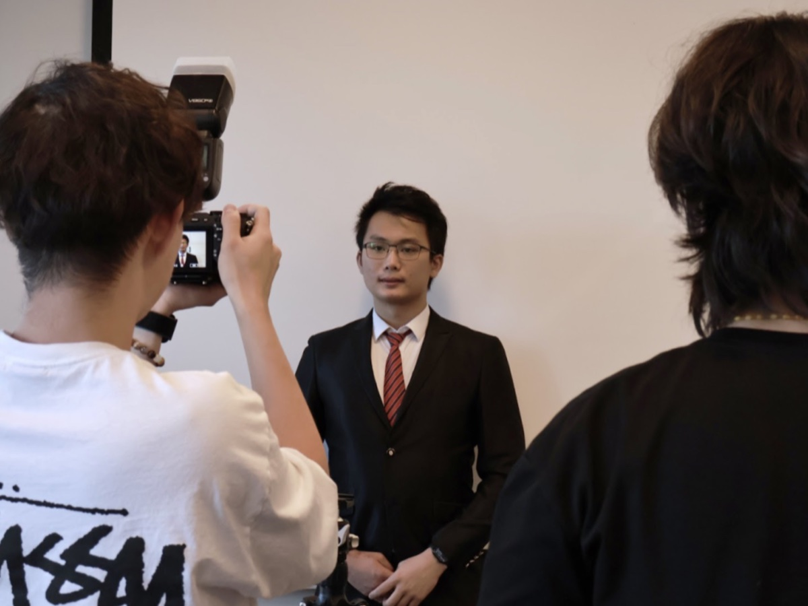
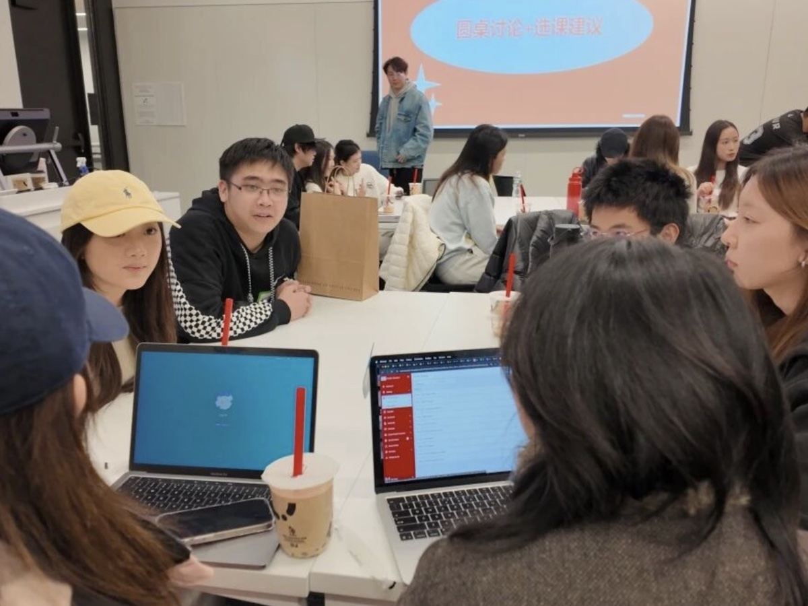
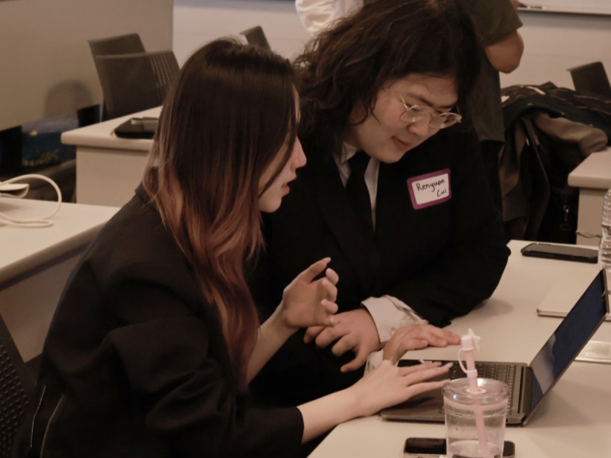
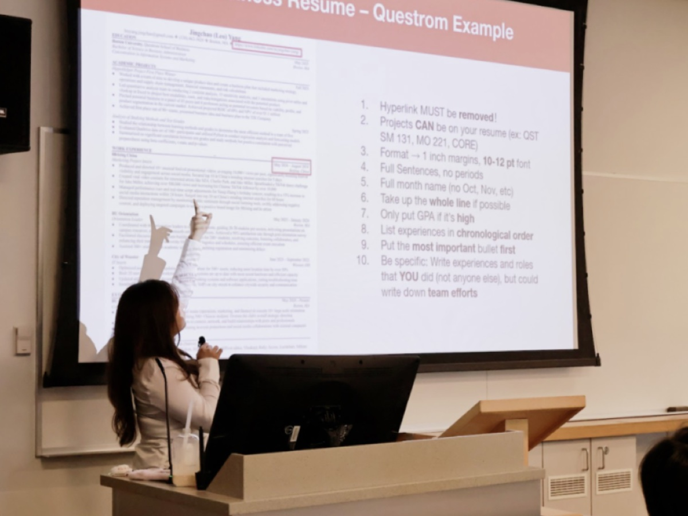
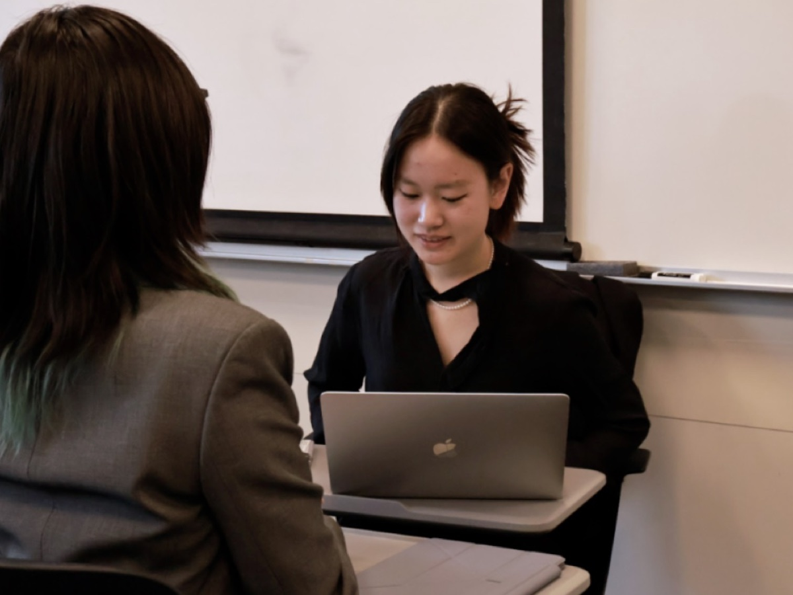

ABOUT · 关于 Workshop
BUGCC Workshop 是伴随 BU 学期节奏运转的主题型活动。每一季选一个学业、职业或生活中大家真正在面对的话题，邀请学长学姐与业内嘉宾现场分享与答疑。从选课、转专业、校内打工，到实习、科研、职业方向——把抽象的问题拆成可以动手的步骤。

2025.10 · 职业准备全流程
职业升级营
一场“简历 → 形象 → 面试”的全流程求职体验。特邀来自哈佛的 Noya 学姐从 HR 视角拆解简历逻辑，随后进入 1v1 简历修改、职业形象照拍摄、LinkedIn 与 BU 资源利用，最后以模拟面试收官。
从「草稿」到「专业简历」的升级——一次拼出求职“第一张名片”。

2025.11 · 选课与专业
我的专业我做主
春季选课季前的主题专场。从一场「CAS 经济生想转 Questrom」的情景游戏开场，邀 QST/COM/CAS 三学院学姐学长分享选课与专业组合经验，Kahoot 玩转 HUB 体系，最后以圆桌讨论“double major / minor 怎么选”收官。
一份清晰的课表，胜过一到选课季就焦虑一次。

2026.02 · 出国 · 实习 · 科研
Global Journey
一场跨境与跨阶段的路径分享会。上半场按 Study Abroad 兴趣地区分组，谈项目申请、学分转换与当地生活；下半场锄透 Internship 与 Research 的申请路径——UROP / BU Connects / Faculty Labs / LinkedIn / JobX，正面讨论国际生身份问题。
从信息焦虑，到知道怎么做。

2026.03 · 校内打工指南
学费太贵，我决定去打工
邀 6 位在岗学长学姐覆盖理工/文科 TA、RA、图书馆、IT/Dining/FitRec 等全类型校内岗位。从怎么找到岗位（官网 / 邮件 / 内推）、申请要求与筛选标准、简历 + cover letter 准备、到面试常见问题一文讲透。
让校内工作从“听说”变成“有路径、有方法”的选择。

2026.04 · 从实习到全职
职业发展方向指南
邀请不同阶段的学长学姐·从实习到全职的多路径真实经验。上半场实习嘉宾圆桌，下半场职场嘉宾圆桌，采用圆桌 + Q&A 形式让交流更真实高效，你可以直接提问、拿到针对你阶段的回答。
把模糊的焦虑拆解成清晰的步骤。

关于 Workshop 的节奏
每学期多场·跟随学业与职业周期选题·现场嘉宾与 Q&A·不是听分享，是拿到可操作的下一步。
下一场跟随 BUGCC 公众号与社交账号获取第一手报名信息。